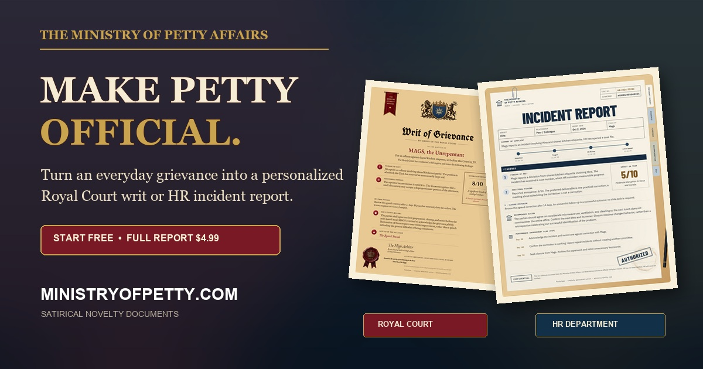

INDEPENDENT INTELLIGENCE. PUBLIC SOURCES.
Federal rules, in plain English.
Have your say.
Federal decisions shape everyday life. Find what’s changing, see when comments close, and understand where your voice fits.
01 / THE RULEMAKING DESK
Federal rules, in focus.
Search the Federal Register. Follow proposals, final rules, and opportunities to comment. See every rule open for comment →
Loading Federal Register data…
Source: FederalRegister.gov. Checks for updates every 5 minutes while this page is open. Publication and source availability determine when new items appear. Watchlists stay in this browser.
02 / TURN UNDERSTANDING INTO ACTION
You have a voice.
Learn how to use it.
How to Comment on Federal Rules
A plain-English guide to finding federal proposals, understanding the process, and writing a public comment with a clear point and useful evidence.
- Find and read the rules that affect you.
- Build your comment with a practical, five-part structure.
- Navigate Regulations.gov with templates and a checklist.
Master Federal Rulemaking
PREMIUM COURSE
COMPREHENSIVE TRAINING
Master the federal rulemaking process with video lessons, interactive quizzes, and shareable certificates. Learn at your own pace with expert guidance from Claire Bennett.
ASSOCIATE
$49
- ✓ 5 core modules
- ✓ Video lessons
- ✓ Interactive quizzes
- ✓ Certificate
CERTIFIED
$149
- ✓ All 10 modules
- ✓ Video lessons
- ✓ Interactive quizzes
- ✓ Certificate
Automatic enrollment. Lifetime access. Shareable certificates.
04 / THE VIDEO BRIEFING ROOM
Watch. Understand. Participate.
Federal Rules Open for Comment, weekday briefings, and Rulemaking 101 explainers — all in one growing archive. Browse video briefings and available transcripts →
Loading the episode archive…
New public uploads are checked on a 15-minute schedule; updates can be delayed. Previously indexed episodes stay in the archive. Videos use an AI-generated presenter and synthetic narration.
05 / JUST FOR FUN
Odds & ends.
Things that have nothing to do with federal rulemaking: projects, recommendations and curiosities worth a look.

SIDE PROJECT · SATIRE
The Ministry of Petty Affairs ↗
We spend our weekdays on real bureaucracy. The Ministry handles the other kind. Someone ate your leftovers, replied-all, or left one square of toilet paper on the roll? File a grievance, choose an office, and get it made magnificently official: a Royal Court writ, complete with wax seal and coat of arms, for household offenses, or an HR incident report, complete with a 30/60/90-day improvement plan, for workplace crimes.
Filing starts free, and you can preview your case before deciding on the full document. It makes a good gag gift for the coworker who keeps microwaving fish.
A satirical novelty site from the creator of FedReg Intel. Its documents have no legal standing; unlike the Federal Register, it is not an official government publication.
THE CONVERSATION CONTINUES
What should we cover next?
Suggest a rule, ask a question, or help us correct the record.